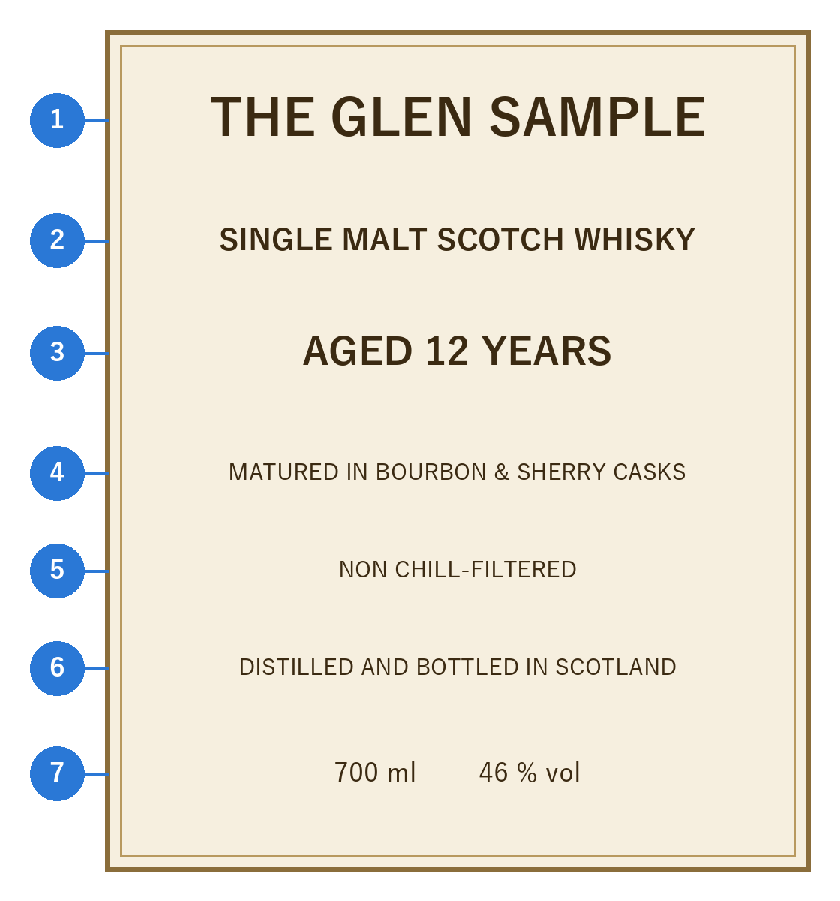

3. ウイスキーの種類
ウイスキーは、原料と製法によっていくつかの種類に分けられる。本章では、まず多くの産地で共通して使われる基本の分類を説明し、次にアメリカンウイスキーの分類と、ラベルの読み方を説明する。産地による分類は世界の主な産地で扱う。
3.1. 原料と製法による分類
ウイスキーの基本は、次の 3 種類である。
モルトウイスキー：大麦の麦芽だけを原料とし、主に単式蒸留器（ポットスチル）で蒸留したウイスキー。原料や蒸留所の個性が表れやすく、香味が豊かである。
グレーンウイスキー：トウモロコシや小麦などの穀物を主な原料とし、連続式蒸留機で蒸留したウイスキー。軽やかでくせが少なく、主にブレンデッドウイスキーの材料として使われる。
ブレンデッドウイスキー：モルトウイスキーとグレーンウイスキーを混ぜ合わせたウイスキー。飲みやすく、品質が安定しており、世界で最も多く飲まれている。
さらに、何をどう混ぜたかによって、図 3.1のように細かく分かれる。
図 3.1 原料と製法によるウイスキーの分類（スコッチの分類を基にしたもの）
主な分類と表記を表 3.1にまとめる。
表記 |
意味 |
|---|---|
シングルモルト（Single Malt） |
1 つの蒸留所で造られたモルトウイスキーだけを使ったもの。その蒸留所の個性を味わえる。同じ蒸留所の中であれば、多くの樽の原酒を混ぜてもよい。 |
ブレンデッドモルト（Blended Malt） |
複数の蒸留所のモルトウイスキーを混ぜたもの。グレーンウイスキーは含まない。かつては「ヴァッテッドモルト」「ピュアモルト」とも呼ばれた。日本では、現在も商品名に残っている（例：竹鶴 ピュアモルト）。 |
シングルグレーン（Single Grain） |
1 つの蒸留所で造られたグレーンウイスキーだけを使ったもの。 |
ブレンデッドグレーン（Blended Grain） |
複数の蒸留所のグレーンウイスキーを混ぜたもの。 |
ブレンデッド（Blended） |
モルトウイスキーとグレーンウイスキーを混ぜたもの。 |
シングルカスク（Single Cask） |
1 つの樽の原酒だけを瓶に詰めたもの。樽ごとに味が異なり、本数も限られる。 |
カスクストレングス（Cask Strength） |
加水せず、樽から出したときのアルコール度数のまま瓶に詰めたもの。アルコール度数は 50〜60 % 台になることが多い。 |
注釈
「シングル」は「1 つの蒸留所」を意味し、「1 つの樽」という意味ではない。1 つの樽だけを詰めたものは「シングルカスク」と呼ぶ。
3.2. アメリカンウイスキーの分類
アメリカでは、主に原料の穀物の割合と熟成の方法によってウイスキーを分類する。ライウイスキーのように、原料の 51 % 以上を占める穀物の名前で呼ぶものが多い。ただし、トウモロコシを 51 % 以上使い、内側を焦がした新しい樽で熟成させたものはバーボンと呼ぶ。主な種類を表 3.2に示す。詳しい規定は世界の主な産地で説明する。
種類 |
主な原料 |
特徴 |
|---|---|---|
バーボン |
トウモロコシ（51 % 以上） |
内側を焦がした新しいオーク樽で熟成させる。甘く華やかな香りが特徴。 |
テネシーウイスキー |
トウモロコシ（51 % 以上） |
バーボンとほぼ同じ製法に加え、熟成前にサトウカエデの炭でろ過する。まろやかな味わいになる。 |
ライウイスキー |
ライ麦（51 % 以上） |
スパイシーで、すっきりした味わい。カクテルにもよく使われる。 |
コーンウイスキー |
トウモロコシ（80 % 以上） |
熟成させないか、使用済みの樽や焦がしていない樽で熟成させる。素朴な穀物の香味がある。 |
3.3. ラベルの読み方
ウイスキーのラベルには、そのウイスキーの素性を知るための情報が書かれている。架空の銘柄のラベルを例に、主な項目を説明する（図 3.2、表 3.3）。


図 3.2 ラベルの例（架空の銘柄）
番号 |
表記 |
意味 |
|---|---|---|
1 |
THE GLEN SAMPLE |
銘柄名。シングルモルトでは蒸留所の名前であることが多い。「GLEN」はゲール語で「谷」を意味し、スコットランドの蒸留所の名前によく使われる。 |
2 |
SINGLE MALT SCOTCH WHISKY |
種類と産地。この例では、スコットランドの 1 つの蒸留所で造られたモルトウイスキーであることを示す。 |
3 |
AGED 12 YEARS |
熟成年数。使われた原酒のうち、最も若いものが 12 年熟成であることを示す。 |
4 |
MATURED IN BOURBON & SHERRY CASKS |
熟成に使った樽。この例では、バーボン樽とシェリー樽で熟成させた原酒を使っている。 |
5 |
NON CHILL-FILTERED |
冷却ろ過をしていないこと（ノンチルフィルター）。 |
6 |
DISTILLED AND BOTTLED IN SCOTLAND |
蒸留と瓶詰めをスコットランドで行ったこと。 |
7 |
700 ml、46 % vol |
容量とアルコール度数。 |
日本で販売されているウイスキーには、品目（ウイスキー）、アルコール分、内容量などを記した日本語のラベルが貼られている。原材料名として「モルト」「グレーン」などと書かれていれば、どの種類の原酒を使っているかが分かる。ただし、酒類は原材料名の表示が義務ではないため、記載のない製品もある。